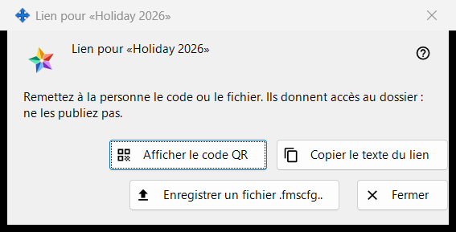
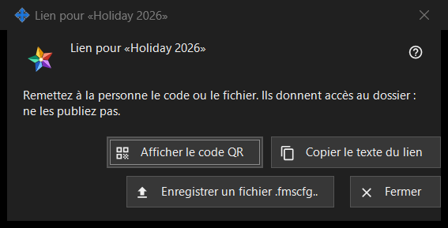

Lien pour un dossier
Objectif
Remet un dossier publié à une personne qui n'a pas de compte sur le serveur d'échange : sous forme de code QR, de texte du lien et de fichier .fmscfg. La fenêtre s'ouvre après « Créer un lien.. » ou « Nouveau lien.. » dans le groupe « Mes dossiers partagés dans le compte d'échange », ainsi que par « Afficher QR / Code.. » dans la fenêtre « Donner l'accès extérieur.. » d'un dossier. Dans le programme actuel, les deux commandes sont désactivées, car l'accès pour les personnes extérieures au compte n'est pas proposé ; cette page décrit ce que la fenêtre affiche lorsqu'un lien existe.


Dans cet ordre
- Sélectionnez un dossier publié et cliquez sur « Créer un lien.. » (ou sur « Nouveau lien.. » pour remplacer un ancien lien).
- Lisez la note en haut de la fenêtre.
- Remettez le lien avec « Afficher le code QR », « Copier le texte du lien » ou « Enregistrer un fichier .fmscfg.. ».
- Cliquez sur « Fermer ».
Les éléments
Quand la fenêtre est disponible
La fenêtre n'existe que pour un lien qui vient d'être créé ou qui existe déjà. Tant que l'accès pour les personnes extérieures au compte n'est pas proposé, « Créer un lien.. » et « Nouveau lien.. » sont désactivés, une note placée dessous en donne la raison et la fenêtre ne s'ouvre pas ; « Afficher QR / Code.. » est désactivé lui aussi. « Supprimer le lien » reste disponible.
La note en haut
« Remettez à la personne le code ou le fichier. Ils donnent accès au dossier : ne les publiez pas. » Quiconque détient le code QR, le texte du lien ou le fichier peut ouvrir ce dossier. Le texte du lien n'est jamais affiché à l'écran.
Afficher le code QR
Ouvre l'image du code QR dans une fenêtre d'agrandissement. Le bouton n'est présent que si un code QR a pu être créé ; à un texte du lien trop volumineux pour un code QR, la fenêtre répond « Le code est trop volumineux pour un code QR - utilisez le fichier. ».
Copier le texte du lien
Place le texte du lien (il commence par FMSSFTP2:) dans le presse-papiers par une voie protégée qui le tient à l'écart de l'historique du presse-papiers Windows et du presse-papiers cloud, et répond « Texte du lien copié. ». Présent uniquement si le lien a un texte.
Enregistrer un fichier .fmscfg..
Enregistre un fichier de paramètres pour ce seul dossier, lisible uniquement par son propriétaire. La fenêtre indique « Fichier enregistré : » suivi du chemin, ou « Impossible d'enregistrer le fichier. ». Présent uniquement si le fichier a pu être créé.
Nouveau lien et Supprimer le lien
Les deux appartiennent au groupe, pas à cette fenêtre, et les deux demandent d'abord confirmation, avec « Non » comme réponse par défaut : « Nouveau lien.. » prévient que tous les codes QR et fichiers précédents cesseront de fonctionner, « Supprimer le lien » que tous les codes QR et fichiers distribués avec lui cesseront de fonctionner.
Fermer
Ferme la fenêtre et en efface le texte du lien, le contenu du fichier et l'image du code QR.
Paramètres du gestionnaire · Paramètres de partage SFTP · Paramètres du serveur d’échange